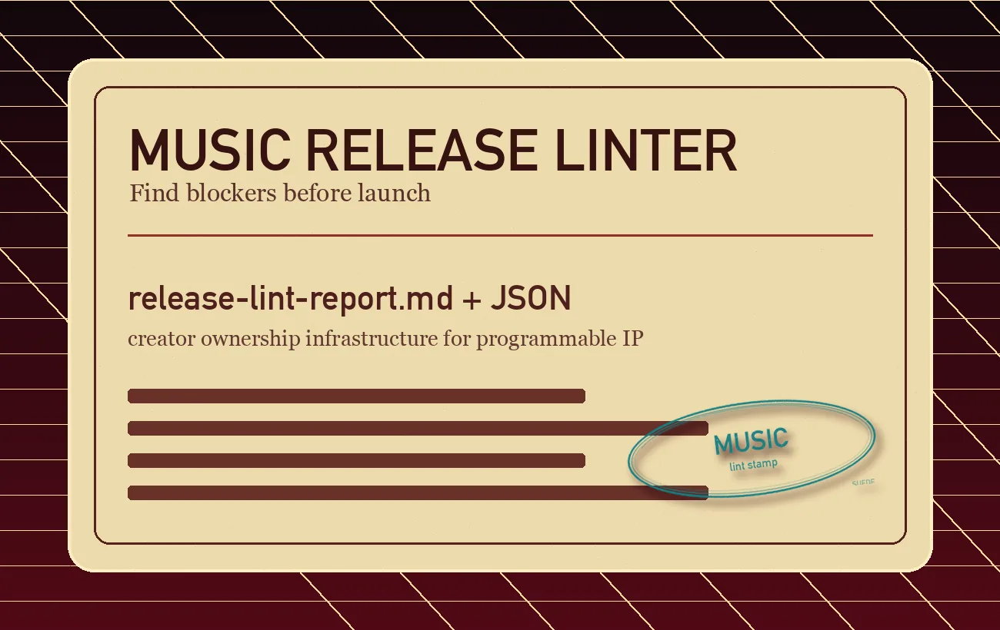

It emits two reports, one a person reads and one a machine reads, and the public script runs offline, so the catalog never leaves the drive. Point it at a song, an album, a stem pack, an artwork or lyric folder, or a whole media project and it scores release readiness: missing files, malformed metadata, artwork and stem problems, split gaps, rights blockers, and platform-delivery issues. Findings only; it clears nothing.
"lint this release folder before the drop"->/suede-release-linterAsk in plain words. The router reads the request and loads this lane; MCP agents find it with list_suede_skills.
claude code · sample session
$ /suede-release-linter check ./releaseartwork 3000x3000 pass · audio levels passgap · missing ISRC on track 31 BLOCKER · FIX BEFORE THE DROP

What it checks
Title, artist, release type, project identity, and metadata files.
Final masters, source sessions, stems, artwork, lyrics, and documents.
Contributor credits, split totals, sample status, licenses, and release history.
Provenance notes, public URLs, platform-delivery blockers, and downstream handoff readiness.
Secret-like files and unsafe output choices that should not be shared publicly.
Best for
Creators checking a release folder before upload or distribution.
Labels and managers cleaning metadata before licensing review.
Catalog owners finding missing credits, stems, artwork, lyrics, and rights details.
Developers preparing structured media projects for review or agent workflows.
Teams deciding whether to move from linting into rights package generation.
Run it locally
The script writes a markdown report and a JSON report. Pass public-safe metadata when available.
After copying the skill folder into an agent skill root, use prompts like:
Use $suede-release-linter to audit this album folder for release readiness.
Use the suede-release-linter skill to check this release folder.
Public safety
A clean report is not legal clearance, distributor approval, registry write, or payout guarantee. The skill organizes evidence, marks uncertainty, and recommends next fixes. Generated reports are drafts until a creator or operator reviews and redacts them.
Install this skill
It ships inside the Suede Creator Skills pack, so one install brings the whole pack and this skill with it. Claude Code takes two commands the first time and one after that; Codex installs the same pack natively.